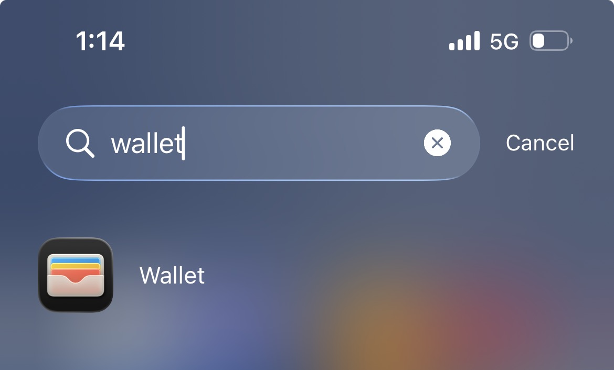
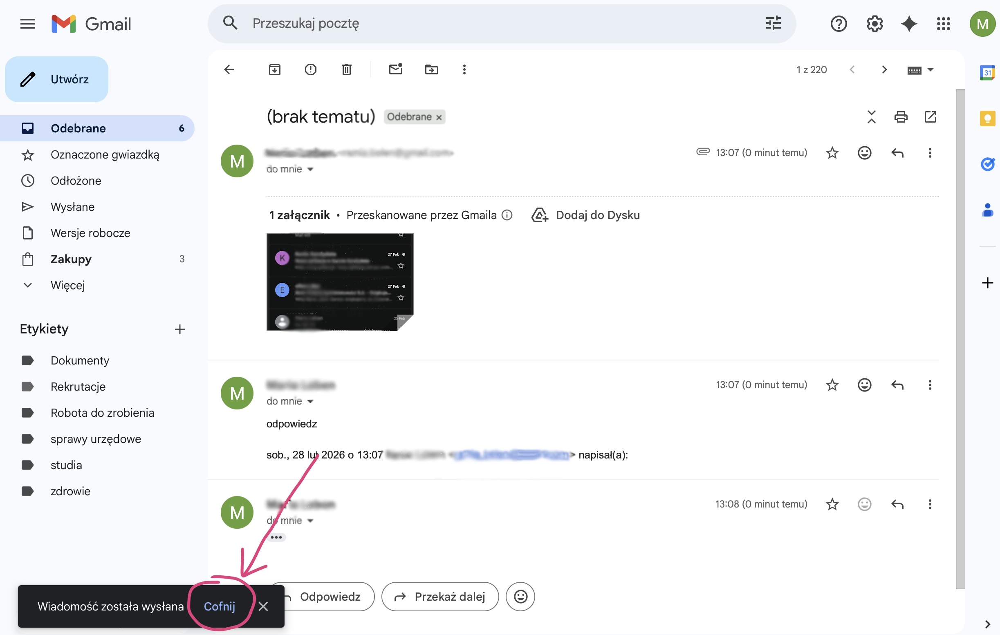
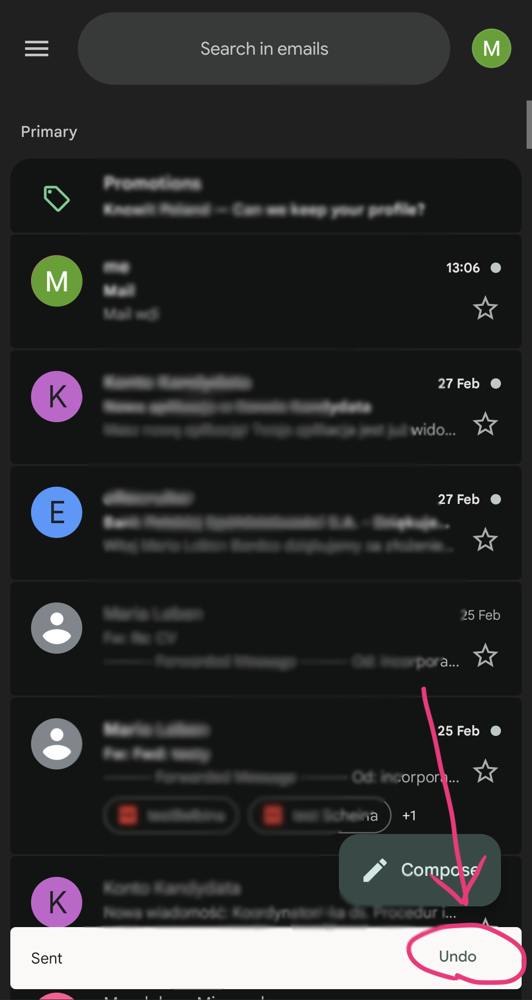
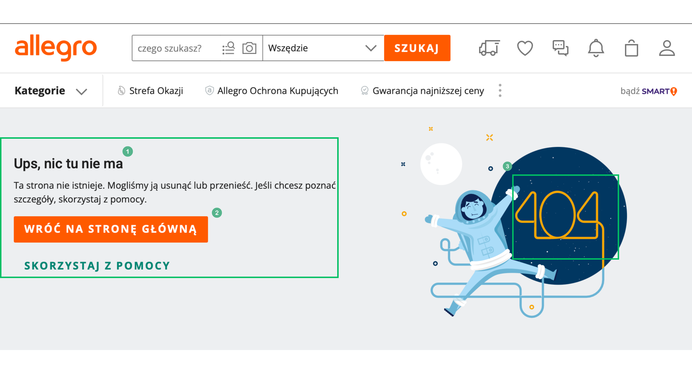
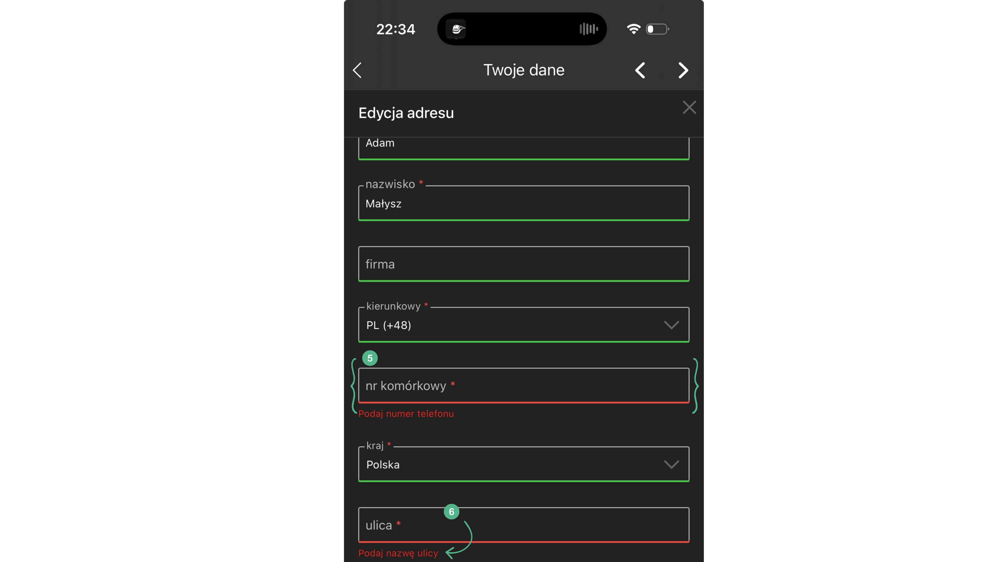

Czym jest analiza heurystyczna?
Analiza heurystyczna to metoda oceny użyteczności interfejsu (UI), w której eksperci sprawdzają, czy projekt jest zgodny z uznanymi zasadami (heurystykami).
Kto opracował zbiór zasad?
Najbardziej znany zbiór 10 heurystyk został opracowany przez Jakoba Nielsena i Rolfa Molicha w 1990 roku.
1. Visibility of system status (Pokazywanie statusu systemu)
EN: The design should always keep users informed about what is going on, through appropriate feedback within a reasonable amount of time. When users know the current system status, they learn the outcome of their prior interactions and determine next steps. Predictable interactions create trust in the product as well as the brand.
PL: Design powinien na bieżąco powiadamiać użytkowników, o tym co jest wykonywane, za pomocą przejrzystych informacji zwrotnych. Gdy użytkownik zna obecny status systemu uczy się o efekcie końcowym jego wcześniejszych starań i może łatwiej określić kolejne kroki. Przewidywalne interakcje tworzą zaufanie co do produktu jak i do branży.
Przykład ze strony internetowej (Desktop)
Opis: Placeholder
Przykład z aplikacji moblinej (Mobile)
Opis: Placeholder
2. Match between system and the real world (Zgodność systemu z rzeczywistością)
EN: The design should speak the users' language. Use words, phrases, and concepts familiar to the user, rather than internal jargon. Follow real-world conventions, making information appear in a natural and logical order.
PL: System powinien mówić językiem użytkownika, używając znanych mu słów, zwrotów i pojęć. Należy opierać się na konwencjach ze świata rzeczywistego, prezentując informacje w naturalny, logiczny i spójny sposób, tak aby system był jak najbardziej intuicyjny.
Przykład ze strony internetowej (Desktop)

Opis: Zrzut ekranu przedstawia ikonę wózka sklepowego w prawym górnym rogu e-sklepu. Pasuje to do heurystyki, ponieważ wykorzystuje znany ze świata fizycznego obiekt do symbolizowania miejsca, w którym przechowujemy produkty przed "kasą".
Przykład z aplikacji moblinej (Mobile)

Opis: Ekran z aplikacji Apple Wallet, gdzie wirtualne karty płatnicze i są ułożone warstwowo, co do złudzenia przypomina fizyczne karty w prawdziwym portfelu. Dzięki temu użytkownik od razu wie, do czego służy ta aplikacja.
3. User control and freedom (Kontrola i swoboda użytkownika)
EN: Offer users an "emergency exit" to easily undo actions or leave a process giving the, control and fostering confidence.
PL: Zapewnienie użytkownikom „wyjścia awaryjnego” w celu cofnięcia poczynionych działań lub opuszcenia trwającego procesu.
Przykład ze strony internetowej (Desktop)

Opis: Możliwość cofnięcia wysłania wiadomości – przeglądarka desktopowa
Przykład z aplikacji moblinej (Mobile)

Opis: Możliwość cofnięcia wysłania wiadomości – aplikacja mobilna
4. Consistency and standards (Spójność i standardy)
placeholder
5. Error prevention (Zapobieganie błędom)
placeholder
6. Recognition rather than recall (Rozpoznawanie zamiast przypominania)
placeholder
7. Flexibility and efficiency of use (Elastyczność i efektywność)
placeholder
8. Aesthetic and minimalist design (Estetyczny i minimalistyczny design)
placeholder
9. Help users recognize, diagnose, and recover from errors (Pomoc w rozpoznawaniu, diagnozowaniu i naprawianiu błędów)
EN: "Error messages should be expressed in plain language (no error codes), precisely indicate the problem, and constructively suggest a solution."
PL: Pomóż użytkownikom rozpoznać, zdiagnozować i naprawić błędy. Komunikaty o błędach powinny być wyrażone prostym językiem (bez niezrozumiałych kodów błędów), precyzyjnie wskazywać problem i konstruktywnie sugerować jego rozwiązanie.
Przykład ze strony internetowej (Desktop)

Opis: Strona błędu 404. Użytkownik widzi grafikę (1), prosty komunikat "Ups, nie możemy znaleźć tej strony" (2) oraz wyraźny przycisk "Wróć do strony głównej" (3).
Przykład z aplikacji moblinej (Mobile)

Opis: Uzupełnianie formularza w aplikacji. Użytkownik widzi które pole nie zostało wypełnione (5) oraz sugestię co powinno się na niej znaleźć (6).
10. Help and documentation (Pomoc i dokumentacja)
placeholder